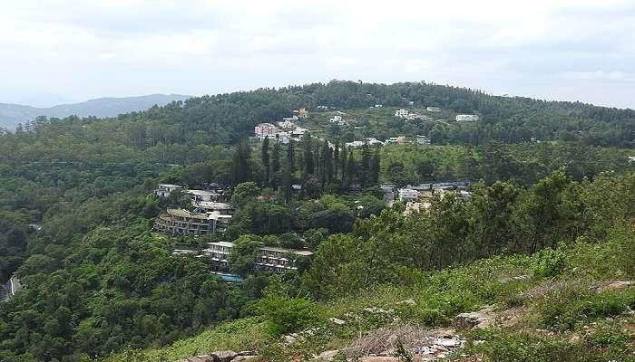
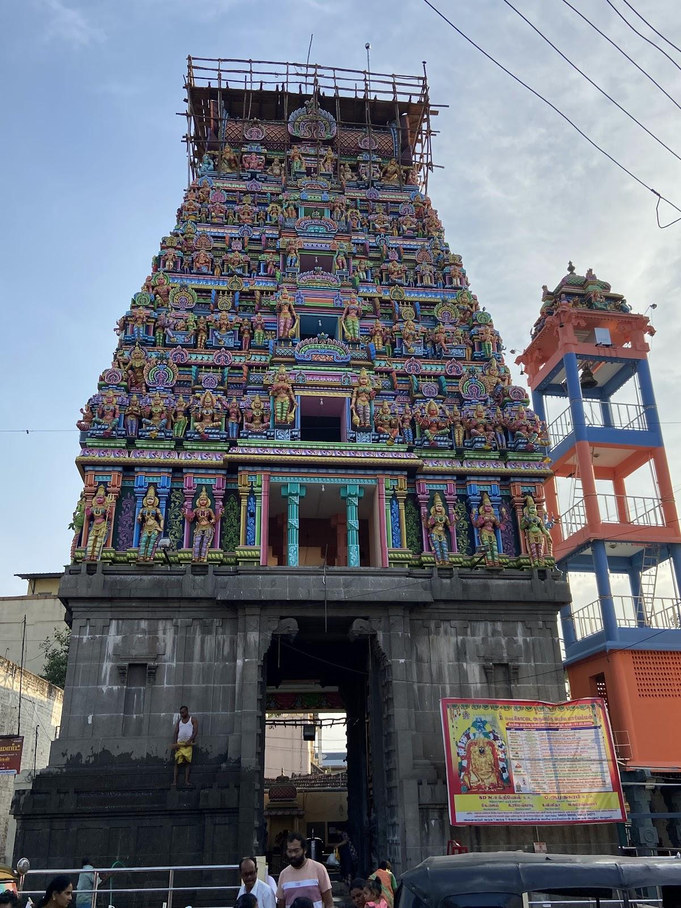
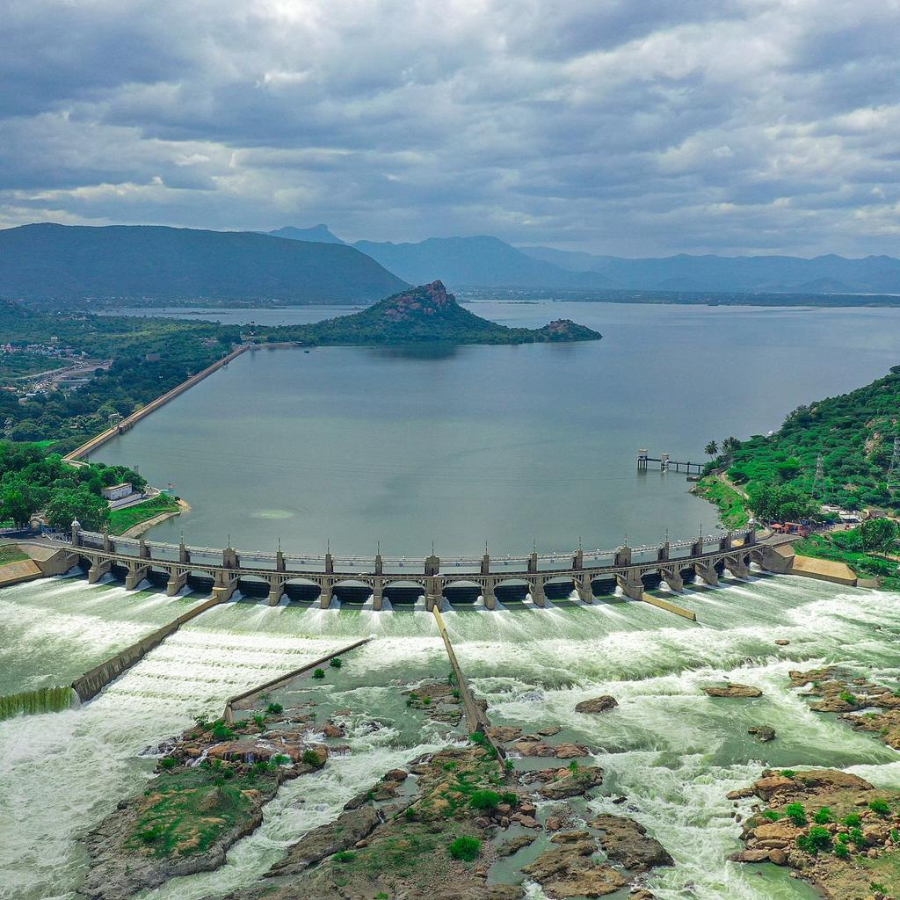
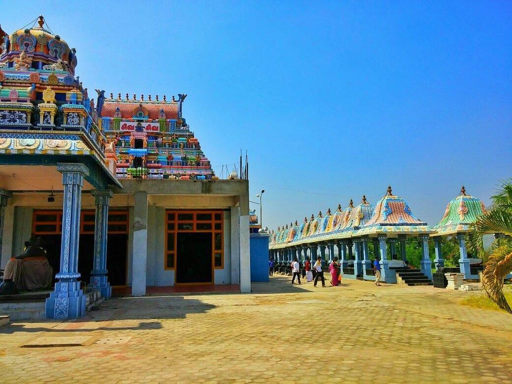
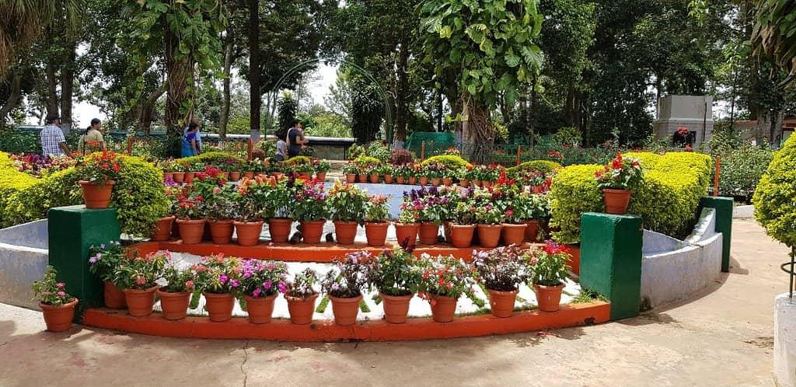
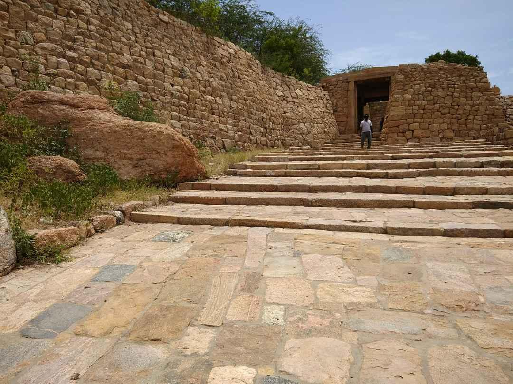

Welcome to Salem
Explore the beauty of Salem with ancient temples, historical monuments, transport facilities, nearby hotels, hospitals and emergency services.
Explore Map
Explore the beauty of Salem with ancient temples, historical monuments, transport facilities, nearby hotels, hospitals and emergency services.
Explore Map
Discover the most popular places to visit in Salem.

A beautiful hill station known for its pleasant climate, scenic viewpoints and coffee plantations.

A famous temple in Salem dedicated to Goddess Mariamman, visited by thousands of devotees every year.

One of the largest dams in Tamil Nadu, offering beautiful river views and gardens.

A unique temple featuring 1008 Shiva Lingas, attracting devotees and tourists throughout the year.

A peaceful public park with beautiful gardens, walking paths and a relaxing environment.

A historic hill fort offering panoramic views and showcasing the rich heritage of Salem.
Easy and convenient transportation across Salem.
Government and private buses connect Salem with all major cities and nearby towns.
Salem Junction is one of Tamil Nadu's major railway stations with excellent connectivity.
Ola, Uber and local taxi services are available across Salem city.
Best hotels to stay during your visit.
A premium hotel offering luxury rooms, fine dining and modern facilities.
A comfortable hotel known for excellent hospitality and quality accommodation.
A popular business hotel with modern amenities and convenient city access.
Emergency medical services available nearby.
A leading multi-speciality hospital providing 24×7 emergency care.
A trusted hospital known for advanced healthcare and experienced specialists.
A well-equipped hospital offering quality medical treatment and emergency services.
Know some interesting facts about Coimbatore.
Salem
Tamil
Mangoes, Steel Plant & Yercaud Hills
Important helpline numbers for your safety.
100
108
101
View Salem location on Google Maps.